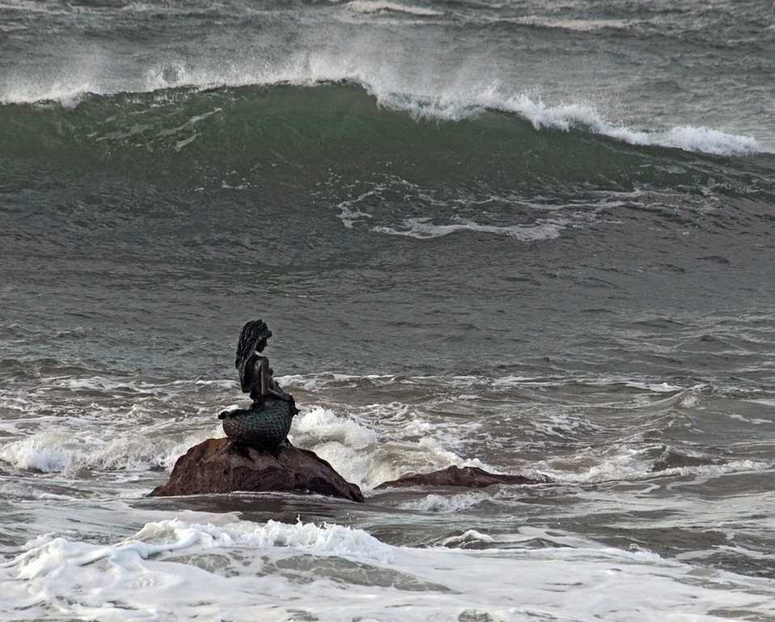
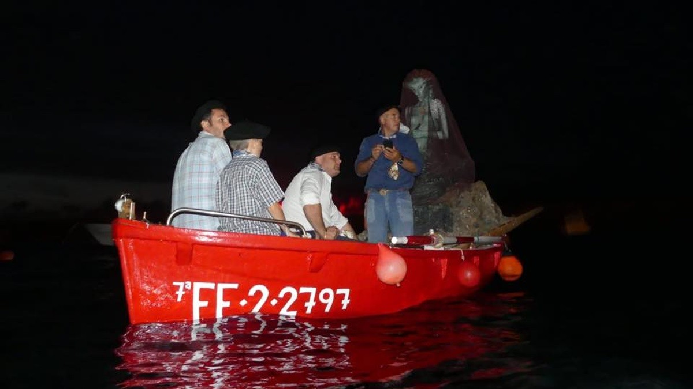
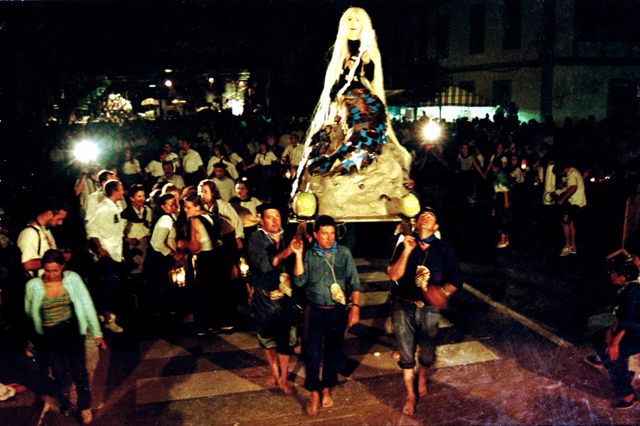
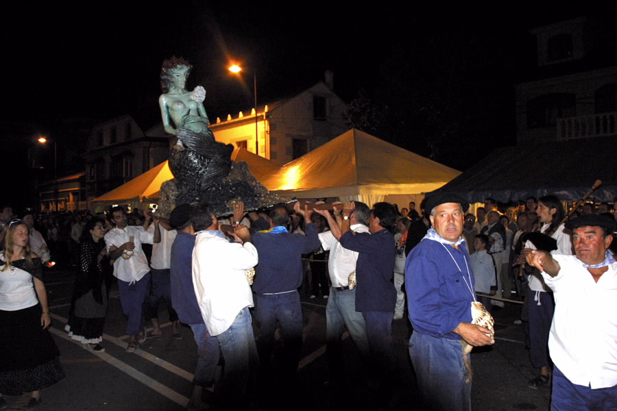
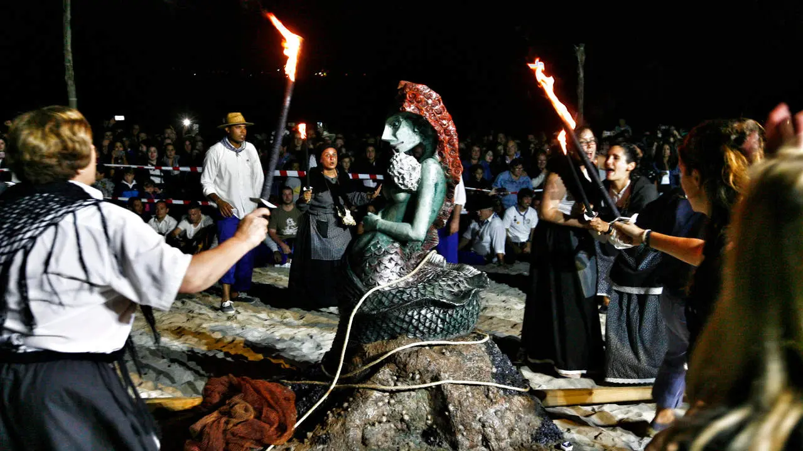

El transcurso de la historia
1. El Refugio
Las Islas Farallón, un archipiélago rocoso frente a San Cibrao, hogar legendario de la sirena.

2. El Misterio
Nadie sabe con certeza si su canto busca proteger a los marineros o arrastrarlos a las profundidades.

3. La Captura
Al caer la noche, los vecinos apagan las luces y parten en chalanas para buscar a la Maruxaina.

4. El Sonido
A lo largo del recorrido, los cuernos y las antorchas rompen el silencio y la oscuridad del mar.

5. El Desembarco
La sirena es traída presa hasta la playa de O Torno, rodeada por la multitud del pueblo.

6. El Recorrido
Custodiada por los marineros, es llevada en procesión hasta la Plaza del pueblo para ser juzgada.

7. El Gran Juicio
Un tribunal popular expone los argumentos a favor y en contra de las acciones de la criatura marina.

8. El Indulto
Como marca la tradición, la Maruxaina es finalmente perdonada y declarada amiga del pueblo.

9. La "Folga"
La absolución da comienzo a una gran fiesta con música, fuegos artificiales y una espectacular queimada.